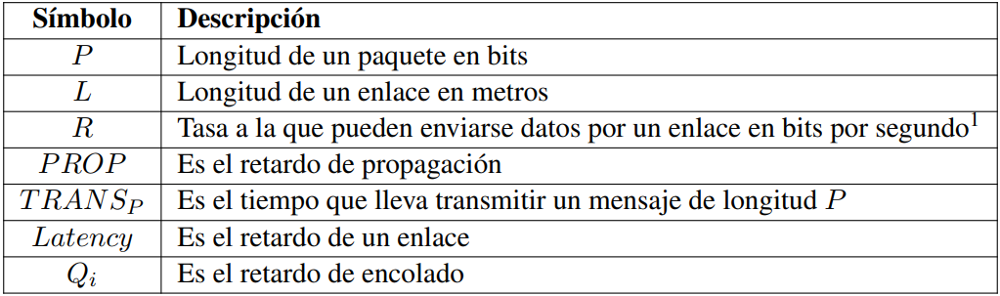
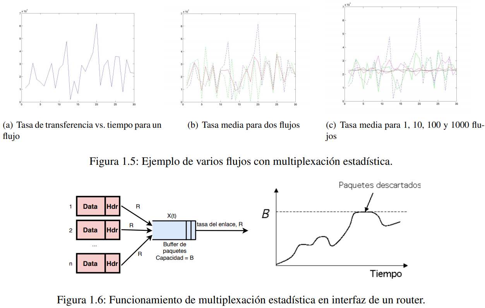
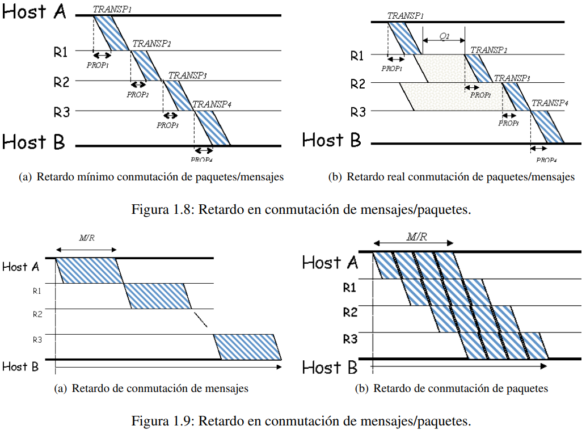
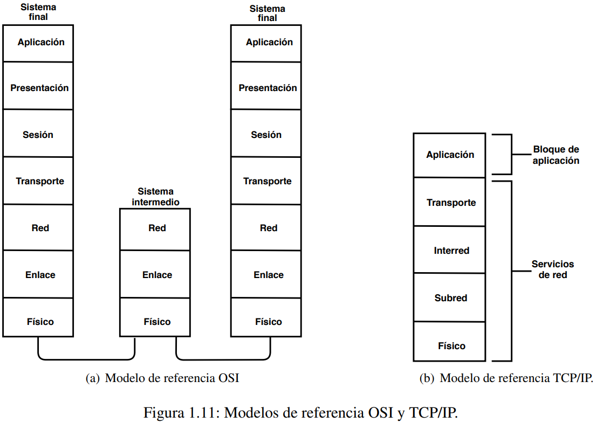
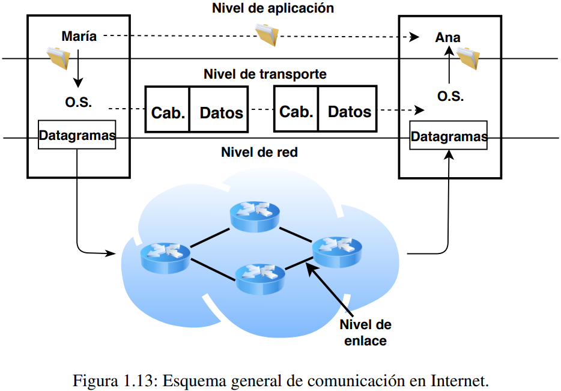

Tema 1: Introducción a la Arquitectura y Organización de las Redes de Ordenadores
Índice
-
Elementos básicos de una red de comunicaciones
Clasificación de las redes de comunicaciones
-
Conmutación de circuitos
Conmutación de mensajes
Conmutación de paquetes
Conmutación de circuitos virtuales
Ganancia por multiplexación estadística
Discusión y comparativa de esquemas
Conceptos iniciales
Una red es una colección interconectada de dispositivos autónomos.
Es interconectada porque existen enlaces de comunicaciones y caminos entre los diferentes dispositivos, de tal forma que es posible el intercambio de mensajes entre ellos. Los dispositivos son autónomos porque cada dispositivo ejecuta su propio software y la única forma de coordinarse con otros nodos es mediante el intercambio de mensajes.
Elementos básicos de una red de comunicaciones
Una red de comunicaciones consta de diferentes elementos que se diferencian fundamentalmente por las funciones que realizan, pueden ser tanto hardware como software.
Sistemas finales: También conocidos como hosts, los sistemas finales son los dispositivos que ejecutan aplicaciones de usuario y se conectan a la red para poder acceder a servicios o datos disponibles en cualquier dispositivo conectado a la red.
Enlaces de comunicación: Son los medios físicos que conectan uno o varios dispositivos que pueden ser tanto sistemas finales como dispositivos internos de la red. Algunas características distintivas de un enlace de comunicaciones son la velocidad de transmisión (bits por segundo) y el retardo (segundos). El retardo se define como el tiempo que tarda un bit en atravesar el enlace de comunicación.
Hay dos tipos de medios de transmisión:
Cableados: También conocidos como medios guiados, son aquellos en los que el flujo de bits se transmite a través de un cable, bien sea en forma de señal eléctrica o en forma de impulsos luminosos.
Inalámbricos: Son aquellos en los que el flujo de bits se transmite en forma de onda electromagnética que se propaga a través del espacio libre (p.ej: IEEE 802.11a/b/g).
En general, los medios cableados son más fiables y tolerantes a interferencias, por lo que suelen conseguir mejores tasas de transferencia, y menores tasas de error. Sin embargo, los enlaces inlámbricos pueden ser muy útiles en determinadas situaciones.
- Los dispositivos de conmutación son aquellos elementos de la red que se encargan de interconectar enlaces de comunicaciones para facilitar el intercambio de datos entre dispositivos de la red.
Los dispositivos de conmutación suelen disponer de mútliples interfaces o puertos, de tal forma que cuando llegan datos por uno de esos puertos, lo retransmiten por la interfaz o puerto que corresponda para que esos datos sean dirigidos al destino. Los dispositivos de conmutación son la respuesta natural a la necesidad de interconectar segmentos de red para conseguir expandir el alcance de una red.
- Los protocolos son las reglas y convenciones que se siguen en la conversación entre el software que se ejecuta en dos dispositivos que intercambian información.
Cuando dos dispositivos, que pueden ser equipos finales o de conmutación, intercambian datos, se implementa una comunicación entre un programa software que se ejecuta en un dispositivo y otro programa software que se ejecuta en el otro dispositivo. Para que este intercambio sea eficaz, es necesario seguir ciertas actuaciones, la definición de cómo se hace ese intercambio es lo que se conoce como protocolo. Los protocolos se diseñan de tal forma que, si ambos programas implementan correctamente el protocolo, la transferencia de información es posible.
Clasificación de las redes de comunicaciones
Existen múltiples clasificaciones de las redes de comunicaciones atendiendo a una gran variedad de criterios. Centraremos nuestra clasificación atendiendo a la localidad espacial de la red:
Redes de área local: Generalmente llamadas LAN (Local Area Network), son redes de propiedad privada (una sala, un hogar, etc). Las LAN tradicionales, como Ethernet, se basaban en la idea de utilizar un cable de cobre compartido por todos los ordenadores a través del cual podían comunicarse a velocidades de 10 Mbps. En la actualidad se emplean entornos conmutados en los que los hosts se conectan a uno o varios switches Ethernet, que solo envían tráfico por aquellos puertos necesarios para llegar al destino. Tecnologías cableadas como FastEthernet y GigabitEthernet pueden llegar a velocidades de transmisión de 100 y 1000 Mbps respectivamente. Hoy en día también hay tecnologías inalámbricas bien conocidas, como IEEE 802.11a/b/c.
Redes de área metropolitana: Generalmente llamadas MAN (Metropolitan Area Network), son una versión más grande de una LAN (un grupo de oficinas, dependencias en edificios cercanos, etc). Pueden ser públicas o privadas. La interconexión se realiza a nivel físico con enlaces punto a punto entre ellas mediante cables o inalámbricamente. En su momento, el estandar IEEE 802.6 definía la versión cableada de estas redes, no obstante ya no está a la altura de las tecnologías actuales, por lo que suele ser más efectivo interconectar estas dependencias a través de las WAN.
Redes de área extensa: Generalmente llamadas WAN (Wide Area Network), se extienden sobre un área geográfica grande, como puede ser un país o un continente. Se diseñan de tal forma que la subred cuente con un núcleo de enlaces de alta capacidad llamados troncales, ya que las demandas de capacidad suelen ser mayores en estos enlaces que en las redes de los equipos finales. Hoy en día existen multitud de tecnologías para redes de área extensa como: FrameRelay, ATM (Asyncronous Transfer Mode) o SONET (Synchronous Optical Network). Una red WAN suele emplear diferentes tecnologías para diferentes parted de la red en función de las demandas de tráfico.
Estrategias de Conmutación
Llamamos estrategias de conmutación a las diferentes alternativas que existen para hacer llegar la información de unos elementos de la red a otros a través de los enlaces y los dispositivos intermedios.
Generalmente, cualquiera de las tecnologías de red existentes se basan en alguna de las siguientes estrategias:
Conmutación de circuitos.
Conmutación de mensajes.
Conmutación de paquetes.
Conmutación de circuitos virtuales.
Las más utilizadas hoy en día son la conmutación de circuitos virtuales y la conmutación de paquetes.
Para poder comparar las distintas estrategias usaremos la siguiente notación:
Donde el retardo de propagación se corresponde al tiempo que tarda un bit en recorrer la longitud de un enlace. Se puede calcular de la siguiente forma:
Siendo c la velocidad de la luz. Puesto que no en todos los medios físicos los bits viajan a la velocidad de la luz, el tiempo que lleva transmitir un mensaje de una determinada longitud P se puede calcular como:
Otro parámetro interesante es el retardo o Latency, que consiste en el tiempo transcurrido desde que se envió el primer bit hasta que se recibe el último en el otro extremo del enlace. Puede calcularse como:
En algunos casos es necesario tener en cuenta el retardo de encolado, que es el tiempo que ha de estar un mensaje almacenado en un dispositivo de conmutación hasta que el enlace está libre y puede comenzar su transmisión. En estos casos, el retardo total se calcula como:
Conmutación de circuitos
Los dispositivos de red se encargan de conectar puertos de entrada y salida, conectándolos físicamente. Así, los conmutadores consiguen establecer un circuito que es equivalente a un cable físico entre ambos extremos de la comunicación.
La comunicación entre dos equipos finales pasa por tres fases:
Establecimiento: El equipo final indica a la red con quién quiere comunicarse, así como las propiedades asociadas a la comunicación. Cuando el dispositivo de conmutación al que se encuentra conectado el equipo final recibe la indicación del establecimiento, analizará la dirección del destino y determinará por qué puerto de salida puede alcanzar directamente o a través de otros dispositivos de conmutación intermedios al destino final. Siempre que el puerto esté disponible, seguirá enviando la indicación de establecimiento de llamada. Los elementos intermedios van repitiendo ese proceso hasta que llega al destino. Si el destino acepta la conexión, ya se habrá establecido un circuito entre origen y destino que permite el intercambio de información entre ambos.
Comunicación: Ambos equipos finales intercambian información utilizando el protocolo que consideren apropiado y los elementos intermedios se limitan simplemente a informar a los extremos finales en caso de que haya algún error y haya que desconectar bruscamente la conexión.
Cierre: Cuando la comunicación entre los equipos finales ha terminado, el que inicia el cierre notifica a su dispositivo de conmutación más cercano por el que pasa el circuito su deseo de cerrar la conexión, y este mensaje se va propagando entre dipositivos intermedios hasta que el circuito queda completamente liberado.
🟩 Una de las ventajas que tiene la conmutación de circuitos es que el circuito que se establece entre los equipos finales es dedicado. Es decir, ninguna otra comunicación puede utilizar el mismo circuito que se está empleando hasta que éste no queda liberado. Esto hace que las aplicaciones de los extremos finales puedan disponer del 100 % de la capacidad del circuito. Es decir, se cuenta con un ancho de banda fijo, que hace que la transmisión de datos se pueda realizar de forma continua y que no haga falta almacenar mensajes en los elementos de conmutación.
🟥 Sin embargo, una vez establecido el circuito, si los equipos finales no hacen uso de la capacidad del mismo, ésta se desperdicia ya que ningún otro flujo de datos de la red puede aprovecharla.
🟩 Además, una vez establecido el circuito, toda la comunicación tendrá lugar por ese mismo circuito hasta que esta termine y el circuito se cierre.
🟥 La parte negativa de esto es que en caso de que cualquier enlace o dispositivo de conmutación por el que pase el circuito falle, la comunicación se verá interrumpida y habrá que establecer la comunicación desde el principio.
Por último, señalar que la fase de establecimiento es la que contribuye en mayor medida al retardo extremo a extremo. Es decir, el retardo de transmisión suele ser despreciable en comparación con el retardo de establecimiento del circuito, ya que hasta que no se ha establecido inicialmente el circuito entre el origen y el destino, no puede comenzar la transferencia de datos, y esta primera fase es más lenta ya que cada dispositivo de conmutación ha de comprobar que tiene recursos, calcular el puerto de salida para el circuito y demás.
Conmutación de mensajes
Cada uno de los mensajes que entran a la red se tratará de forma independiente y se enrutará hacia su destino usando información de la que pueda disponer cada uno de estos enrutadores. Cada mensaje se encamina de forma independiente de tal forma que diferentes mensajes entre un mismo origen y un mismo destino podrían seguir caminos diferentes. Para poder lograr esto, cada uno de esos mensajes deberá incorporar cierta información adicional a los datos para que puedan ser encaminados de forma independiente.
Dado que un mismo router podría necesitar enviar dos mensajes distintos por un mismo interfaz de salida, es necesario que los routers cuenten con buffers de almacenamiento para que los paquetes puedan encolarse mientras el interfaz de salida está un uso y no está disponible.
El concepto de la conmutación de mensajes es más bien un modelo teórico, ya que en la práctica se ha comprobado que se puede consumir un mejor rendimiento troceando grandes mensajes en paquetes más pequeños.
Conmutación de paquetes
Puede verse como una mejora de la conmutación de mensajes que consiste en trocear los mensajes en paquetes de menor tamaño para conseguir mejor rendimiento.
En la conmutación de paquetes los routers intermedios han de contar con buffers en cada una de las interfaces. Cada router se encarga de seleccionar, para cada paquete de forma individual en base al identificador del nodo destino, por qué interfaz enviar el mensaje hacia el siguiente salto. A este tipo de funcionamiento también se le conoce como store-and-forward ya que el router almacena cada mensaje recibido y lo reenvía por la interfaz apropiada
Tanto la conmutación de mensajes como la de paquetes se caracterizan porque cada paquete puede seguir un camino distinto, pudiendo incluso sufrir paquetes de un mismo flujo retardos variables puesto que, aunque vayan por un mismo camino, pueden experimentar tiempos de espera diferentes en los buffers de los routers en función del nivel de ocupación de los mismos. A esta varianza en el retardo de los paquetes que componen un mismo flujo de datos se le denomina jitter.
🟩 El que cada paquete pueda seguir un camino distinto también permite que pueda haber una mayor tolerancia a fallos, ya que en el caso de que un router o un enlace falle, el resto de paquetes pueden encaminarse por caminos alternativos.
Por último, señalar que la capacidad de los enlaces se usa de forma dinámica, los paquetes se van enviando por las interfaces que corresponda por lo que varios flujos podrían compartir la capacidad disponible en un mismo enlace si ambos se encaminan por una misma interfaz de salida de un determinado router.
Conmutación de circuitos virtuales
Es una técnica de conmutación de paquetes que emula el establecimiento de circuitos. Es decir, desde el punto de vista de los dispositivos finales, el servicio que se percibe es similar al de la asignación de un circuito dedicado. Sin embargo, ese circuito es realmente virtual ya que internamente la red lo que hace es trocear los datos en paquetes y enviarlos por los enlaces que corresponda para garantizar la capacidad de red necesaria, así como un retardo acotado.
Del mismo modo que en la conmutación de circuitos, el intercambio de información entre equipos finales consta de las tres fases de establecimiento, comunicación y cierre.
- Establecimiento: Los conmutadores intermedios fijan el camino a seguir por los paquetes una vez que los datos enviados sean troceados en paquetes de menor tamaño. Para ello, cada conmutador almacenará para cada identificador de circuito virtual los puertos de entrada y salida que correspondan para que en la medida de lo posible todos los paquetes de ese flujo (que deberán de incluir el identificador del camino virtual al que pertenecen) vayan por el mismo camino virtual. Sin embargo, en caso de errores de comunicación o fallos de los nodos internos de la red, esta podría reencaminar esos paquetes internamente por un nuevo camino físico de tal forma que para los equipos finales estos fallos pudiesen pasar inadvertidos. Es un intento de conseguir ofrecer un caudal fijo garantizado como en la conmutación de circuitos, pero con una mayor flexibilidad y tolerancia a fallos para el operador.
El control de admisión es un proceso por el cual se comprueba durante la fase de establecimiento si la red cuenta con los recursos suficientes para satisfacer los requisitos del nuevo circuito virtual a establecer. Esto es así porque en los circuitos virtuales los conmutadores también necesitan usar búferes para almacenar mensajes.
Además del retardo de establecimiento del circuito virtual, una parte no despreciable del retardo se debe también al retardo por la transmisión de paquetes, ya que también podría darse el caso de que algunos paquetes tengan que esperar en búferes de salida de las interfaces.
🟩 El ancho de banda se aprovecha de forma dinámica.
Hay grandes similitudes entre la conmutación de paquetes y la conmutación de circuitos virtuales. En ambos casos, cada paquete ha de ir identificado y cada elemento intermedio ha de enviarlo por la interfaz apropiada. La diferencia fundamental es que mientras que en conmutación de paquetes cada paquete se enruta de forma totalmente independiente, en la conmutación de circuitos virtuales, cada nodo intenta enrutar todos los paquetes de un mismo circuito por el mismo camino y en caso de fallos se reencamina el circuito como tal, pero los paquetes siguen yendo todos por el mismo circuito virtual.
Ganancia por multiplexación estadística
Una de las propiedades fundamentales de la conmutación de circuitos es que una vez establecido el circuito existe un enlace con ancho de banda dedicado entre los dos extremos. Esto es una ventaja interesante para aplicaciones como la telefonía, pero puede ser también una gran desventaja en caso de utilizar otras aplicaciones. En particular, la imposibilidad de aprovechar la capacidad no utilizada por los usuarios de un circuito hace que pueda haber un gran desaprovechamiento de recursos y por eso hoy día casi todas las tecnologías se basan de una forma u otra en conmutación de paquetes. Al fin y al cabo cuando es necesario disponer de esos recursos de red de forma garantizada, se puede recurrir a conmutación de circuitos virtuales.
La multiplexación consiste en permitir el uso simultáneo de un canal de comunicaciones por varios usuarios.
Existen diferentes técnicas, como por ejemplo la multiplexación en frecuencia (cada usuario usa una frecuencia distinta), o la multiplexación en tiempo (los usuarios se dividen el tiempo en ranuras en las que cada usuario puede usar el enlace). En el caso de Internet es muy relevante la multiplexación estadística.
La idea es asignar dinámicamente los intervalos de tiempo a los paquetes que llegan de las diferentes aplicaciones (por ejemplo, el orden en que llegan), de manera que durante los picos de menor actividad de unos usuarios se puede aprovechar el uso del canal.
Si los flujos son independientes, los picos de tasa de transferencia de flujos distintos no tienen porqué coincidir en el tiempo y al suceder en instantes diferentes sucede que, conforme vamos agregando más flujos a un canal, más se estabiliza la tasa media de envío, que en general será menor que la suma de los picos individuales de cada flujo.
Ante la llegada de N flujos a través de enlaces con una tasa máxima de envío de R bps, y considerando que el interfaz de salida también tiene una tasa máxima de envío de R bps, el buffer sirve para absorber ráfagas temporales. Eso combinado con el hecho de que en general los flujos no siempre están transmitiendo a una tasa de R bps todo el tiempo, hace que el enlace de salida no necesite tener una tasa de envío de N × R como cabría pensar en un principio
🟥 Esta ventaja en términos de ahorro en la contratación de ancho de banda en los enlaces de salida tiene también unos aspectos negativos a considerar:
Si el buffer tiene un tamaño limitado de B bits, entonces podría haber pérdidas si la suma de las tasas de envío de los flujos entrantes es suficiente como para que, con la velocidad de salida disponible, dicho buffer se llene.
El retardo que experimentan los flujos puede ser variable, por lo que no hay garantía de calidad de servicio (QoS). Esto se debe a que el retardo que sufre un paquete concreto depende del nivel de ocupación del buffer en el momento t en que entra, que denotaremos por
. Si el buffer está vacío el mensaje se envía directamente por la interfaz de salida. Sin embargo, si el buffer no está vacío, dicho mensaje tendría que esperar a que se envíen todos los anteriores antes de poder transmitirse. Por tanto, el retardo experimentado no es fijo, y sería
. Además, el retardo de encolado está acotado superiormente por el tiempo que tardaría el buffer en vaciarse. Por tanto, respecto al retardo de encolado se cumpliría que
.
La ganancia por multiplexación estadística consiste en que: dados N flujos con una tasa máxima de envío ,
cada uno de ellos, que llegan a un buffer para ser enviados por una interfaz, se define la ganancia por multiplexación estadística (SMG) como:
.
En el caso particular de que , entonces:
.
Por tanto, la ganancia por multiplexación estadística mide cómo de efectivo resulta aplicar multiplexación estadística desde el punto de vista del ahorro por ancho de banda que se puede conseguir si se multiplexan todos los flujos que llegan a la interfaz. Cuanto menor sea la tasa máxima de envío del flujo resultante (), mayor será la ganancia conseguida.
El peor caso que podría darse es cuando todos los picos de tasa de transferencia máxima de los flujos individuales suceden al mismo tiempo. En ese caso, la tasa de transferencia máxima del flujo resultante de la multiplexación sería igual a y por tanto
sería 1. En el resto de casos,
será mayor que 1 y cuanto mayor sea, más efectiva resultará la multiplexación estadística.
La multiplexación estadística es más efectiva cuanto más a ráfagas sea el tráfico. Para poder conseguir esa ventaja por multiplexación estadística tenemos que recurrir al empleo de buffers en las interfaces de los routers para absorber dichas ráfagas. Esto tiene implicaciones desde el punto de vista de que se añade variabilidad al retardo que experimentan los paquetes así como la probabilidad de pérdidas si la longitud de las ráfagas supera el tamaño del buffer.
En redes como Internet donde el tráfico que generan las aplicaciones tiene tasas de transferencia muy variables, la conmutación de paquetes resulta especialmente efectiva gracias a que consigue importantes ganancias por multiplexación estadística, y consigue un uso muy eficiente de los enlaces. Además, la propia naturaleza de la conmutación de paquetes hace que la red sea muy robusta y tolerante a fallos ya que, si los enlaces o los routers fallan, los paquetes pueden encaminarse por rutas alternativas.
Discusión y comparativa de esquemas
Centraremos nuestra discusión sobre los esquemas basados en conmutación de paquetes.
La conmutación de paquetes es mejor que la conmutación de mensajes, pero, ¿por qué? Tanto en conmutación de mensajes como en conmutación de paquetes, los routers intermedios se encargan de funcionar en modo "store-and-forward". Es decir, cuando llega el mensaje de longitud , se almacena, se encola en el buffer de salida del interfaz correspondiente y, cuando le corresponde, es enviado.

Por tanto, asumiendo el mejor caso en que éste es el único flujo en la red y los buffers de salida están vacíos, el retardo en cada uno de los saltos consta de dos partes, el tiempo de
transmitir el mensaje de longitud , que se denota por
más el retardo de propagación
. Entonces, el retardo mínimo extremo a extremo que se consigue se calcula como:
No obstante, en el caso más normal, los buffers no tendrían por qué estar vacíos y por tanto, el retardo de encolado en el nodo no es despreciable y ha de tenerse en cuenta. En cada salto ha de considerarse tanto la propagación, como la transmisión y el encolado. Por tanto, el retardo total en el camino con conmutación de paquetes o mensajes para transmitir un paquete de
bits se calcula como:
En la conmutación de paquetes lo que hacemos es que troceamos un mensaje de longitud en varios paquetes de
bits. En el caso de la conmutación de mensajes, el retardo de transmisión del mensaje a través de un enlace
, se puede calcular como:
, siendo
la longitud del mensaje y
la tasa de transferencia del enlace
. Por tanto, el retardo total despreciando los retardos de encolado serían:
Si troceamos el mensaje en varios paquetes de tamaño , tan pronto recibimos el primer paquete del mensaje podemos comenzar a transmitirlo hacia el siguiente salto, consiguiendo así el envío en paralelo por diferentes enlaces de la red, y por ende, una disminución del retardo extremo a extremo. Una ventaja adicional es que se evita que un enlace esté ocupado durante mucho tiempo y bloquee a otros flujos. En este segundo caso, suponiendo que el enlace con índice
es aquel cuyo retardo en máximo (
), el retardo total se puede calcular como:
Que a su vez puede simplificarse como:
Si el tamaño del paquete puede considerarse despreciable respecto al tamaño del mensaje:
Aunque pueda parecer por tanto que cuanto menor sea el tamaño de cada paquete () mejor rendimiento, la realidad es que como cada paquete ha de llevar también datos de cabecera para poder indicar su destino y que pueda enrutarse de forma independiente, llega un momento en que si hacemos el paquete demasiado pequeño los datos útiles que viajan en cada paquete serían muy pocos en comparación con el tamaño de la cabecera, por lo que al final acabaría desperdiciándose mucho ancho de banda.
Arquitectura por niveles: OSI vs. TCP/IP
Las redes se organizan como una serie de capas o niveles que realizan una función específica y se agrupan unas sobre otras de la forma que la capa superior usa cierta funcionalidad que ofrece la capa inferior usando una determinada interfaz (API) entre capas. De esta forma, es posible cambiar una implementación de una capa por otra distinta sin que el sistema completo deje de funcionar.
En una comunicación entre dos equipos, la capa n de uno de ellos es la que habla con la capa n del otro usando una serie de reglas y convenciones para realizar esa conversación que se denominan protocolo. Para que esas dos capas n puedan hablar, ambos usarán la funcionalidad que ofrecen las capas inferiores.
Denominamos arquitectura de red al conjunto de protocolos y capas que definen el funcionamiento de una red de comunicaciones.
La arquitectura debe contener información suficiente como para que un implementador pueda construir el hardware y software de cada capa de manera que cada una obedezca de forma correcta al protocolo apropiado. Evidentemente, los detalles de implementación y las interfaces entre capas no se incluyen, ya que en esos aspectos el implementador tiene libertad de diseño al no afectar al funcionamiento de los protocolos.
La pila de protocolos es una lista de protocolos empleados por cierto sistema organizados por capas.
Cuando un protocolo de una de las capas debe enviar al otro equipo información que le sirva para tratar los datos que reciba, lo que se hace es que se añade una cabecera al principio de los datos incluyendo dicha información. Por ejemplo, al pasar por la capa de sesión se añade una cabecera, así como en las de transporte, red y enlace. Si uno de los niveles tuviese que fragmentar un mensaje en varios, añadiría su cabecera correspondiente a cada uno de esos niveles. Cuando el mensaje se transmite por el medio físico, los datos originales irán acompañados de todas las cabeceras que hayan añadido los niveles inferiores.
Cuando un equipo recibe un mensaje, al pasar por un determinado nivel, este lee su cabecera, realiza su función y elimina dicha cabecera antes de pasar el paquete al nivel superior. En el caso particular de la fragmentación de mensajes mencionada antes, dicho nivel también esperaría a recibir y recomponer todos los fragmentos antes de enviar los datos al nivel superior.
Las dos arquitecturas de redes más conocidas son el modelo de referencia OSI (Open Systems Interconnection) y el modelo TCP/IP.
El modelo OSI consta de 7 capas en los equipos finales y tres en los enrutadores, que sólo se encargarían de los aspectos de red, enlace y físico. Los equipos finales por su parte también incorporarían la funcionalidad correspondiente a los niveles de aplicación, presentación, sesión y transporte.
En el modelo OSI, la capa física se encarga exclusivamente de la transmisión de bits por un canal de comunicación y, en general, esta capa de las arquitecturas suele simplemente indicar las tecnologías de comunicación a emplear, cuyos estándares son bien conocidos y están ya definidos en otras normas.
En el nivel de enlace, se toma un medio de trasmisión en bruto y se convierte en un medio libre de errores de transmisión. En particular, se trata el tema de la división de paquetes en tramas, adicción de códigos correctores o detectores de errores, mecanismos de acceso al medio, mecanismos de control de flujo y retransmisiones de tramas perdidas, etc.
La capa de red se encarga de encaminar los paquetes de la fuente al destino, en algunos casos también del control de congestión, etc.
La capa de transporte interconecta directamente a los equipos finales y su función básica es aceptar datos de la capa de sesión, dividirlos en unidades mas pequeñas si fuese necesario, pasarlos a la capa de red y asegurar que todos los pedazos lleguen correctamente al otro extremo.
La capa de sesión permite a los usuarios de equipos diferentes establecer sesiones para el intercambio de datos entre ambos. El concepto de sesión es similar al del nivel de transporte pero con ciertas funciones mejoradas que pueden ser interesantes para las aplicaciones tales como pueden contar con sincronización en el envío de la información.
La capa de presentación encapsula aquellas funciones que las aplicaciones suelen requerir con suficiente frecuencia como para que compense la búsqueda de una solución general en lugar de dejar que cada aplicación tenga que implementar dicha función.
La capa de aplicación contiene varios protocolos que se necesitan con frecuencia como por ejemplo la transferencia de ficheros, correo electrónico, directorios, etc.
Respecto a los niveles inferiores este modelo no dice mucho ya que justamente uno de los objetivos de diseño es que TCP/IP pueda funcionar sobre multitud de tecnologías, y de hecho, uno de los grandes éxitos del protocolo IP es haberlo conseguido.
Toda la capa de Internet se basa en la conmutación de paquetes no orientada a conexión. Para ello, se define el protocolo IP (Internet Protocol) y el trabajo de la capa de Internet es entregar paquetes IP a su destino. Su función principal es el encaminamiento. En este sentido, las capas de Internet en TCP/IP y la red en OSI son muy parecidas.
Respecto a las capas de transporte, en el caso del modelo TCP/IP se emplean dos protocolos: El protocolo TCP (Transmision Control Protocol), confiable y orientado a conexión y el protocolo UDP (User Datagram Protocol), que es no confiable y no orientado a conexión.
En la capa de aplicación TCP/IP no tiene capas de sesión ni de presentación. En su momento no se pensó que fuesen necesarias y de hecho la experiencia posterior con OSI así lo refrendó, porque realmente fueron muy pocas las aplicaciones que usaron dichas capas.
El modelo OSI fue mucho más eficaz en cuanto a que hizo una labor muy rigurosa de estudio, separación de funcionalidad, definición clara de los conceptos de servicio, interfaz y protocolo y demás. Sin embargo, el proceso fue muy lento y para cuando estuvo listo, TCP/IP era ya casi el estándar de facto. Por tanto, aunque como arquitectura de protocolos TCP/IP dicha mucho de ser perfecta, la realidad es que hoy día es la más usada y no hay más que ver el ejemplo de la red Internet.
Aspectos de diseño de Internet
Cuando una aplicación quiere enviar ciertos datos a otra, pasa todos esos datos al nivel de transporte, que se encarga de dividirlos en unidades más pequeñas llamadas segmentos. Cada segmento es también enviado al nivel de red para que sea encaminado a su destino. Para ello, el nivel de red introduce una nueva cabecera llamada cabecera IP donde se indica la dirección del emisor y del destinatario y que, junto con el segmento, forman lo que se llama un datagrama.
Cada datagrama se envía de forma independiente y tampoco hay garantía de tiempo de entrega, ni de entrega en orden ni siquiera de entrega. Por lo que podría hacer falta detectar paquetes duplicados y además habría que ver cómo garantizar la integridad de los datos.
Para resolver todas estas cuestiones de diseño se incorporó la funcionalidad necesaria a los diferentes protocolos de nivel de transporte, red y enlace.
Organización y estructura de Internet
Hoy en día Internet se compone de miles de redes organizadas de forma jerárquica y en muchos casos solapadas entre sí. Los hosts se agrupan en redes de área local (LAN), que a su vez se conectan a un proveedor de servicios de Internet (ISP – Internet Service Provider) mediante la interconexión a uno de sus puntos de presencia (PoP – Point-of-Presence). La conexión se hace en una serie de pasos comenzando por el equipo en las premisas del usuario (CPE – Customer Premises Equipment).
Bibliografía
Información extraída de los apuntes de la asignatura.
Bibliografía de los apuntes:
Douglas E. Comer. Internetworking with TCP/IP Volume I. Principles, Protocols and Arqchitecture, 5th Ed. Prentice Hall, Pearson, 2006. Cap. 1 y 2.
William Stallings. Data and Computer Communications 8th Ed. Prentice Hall, Pearson, 2007. Cap. 1, 2 y 8.
Andrew S. Tanenbaum. Redes de Computadoras 3a Ed. Prentice Hall, Pearson, 1998. Cap. 1.
Larry L. Peterson and Bruce S. Davie. Computer Networks: A systems approach, 5th Ed. Elsevier, 2011 sec 2.3 y 3.1.
D.Clark. The design philosophy of the darpa internet protocols. In Proc. of ACM SIGCOMM, pages 106–114, 1988. Lectura complementaria.
José Miguel Alonso. Protocolos de comunicaciones para sistemas abiertos. Addison-Wesley, 1996. Lectura complementaria.